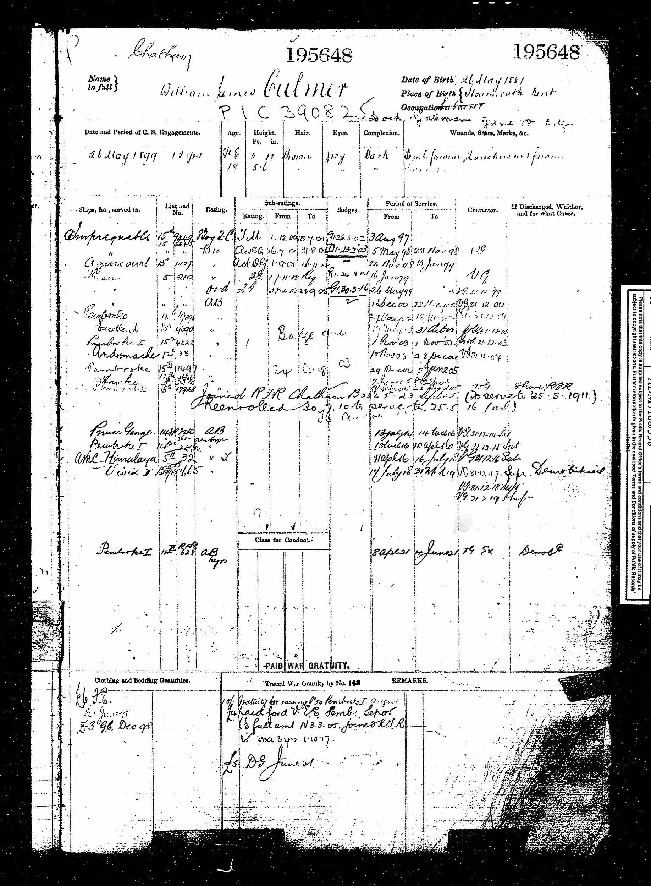

William James Culmer 1882 - c1926
[ Home ] | [ Calendar ] | [ Surnames Index ] | [ Errors ] | [ Family History ]A dock gateman and the child of Charles Culmer (an agricultural labourer) and Emma Beak, William Culmer, the first cousin twice-removed on the mother's side of Nigel Horne, was born in Stourmouth, Kent, England on 26 May 18821,2,3,4, was baptised there at All Saints on 8 Jun 1882 and married Lillian Marshall (an office cleaner with whom he had 1 child, Lilian) in Sculcoates, East Yorkshire, England around Feb 19056.
During his life, he was living in Westmarsh, Kent, England on 5 Apr 18918; in Malta on 31 Mar 1901; and at 4 Norman Avenue in Sculcoates on 2 Apr 19117. He served in the navy from 3 Aug 1897 to 4 Jun 1921 (navy - service number 195648; Served from 3 Aug 1897 to 4 Jun 1921 on a number of ships starting with HMS Impregnable, finishing with HMS Pembroke I).
He died c. Feb 1926 in Sculcoates5.
Parents
- Charles was born on 5 Dec 1852
- Emma was born on 25 Sept 1854
Children
- Lilian was born on 27 Mar 1911
Citations
- 1891 England Census Online publication - Provo, UT, USA: The Generations Network, Inc., 2005.Original data - Census Returns of England and Wales, 1891. Kew, Surrey, England: The National Archives of the UK (TNA): Public Record Office (PRO), 1891. Data imaged from The National
- 1911 England Census Online publication - Provo, UT, USA: Ancestry.com Operations, Inc., 2011.Original data - Census Returns of England and Wales, 1911. Kew, Surrey, England: The National Archives of the UK (TNA), 1911. Data imaged from the National Archives, London, England.
- England & Wales births 1837-2006 - Findmypast
- England & Wales, FreeBMD Birth Index, 1837-1915 Online publication - Provo, UT, USA: The Generations Network, Inc., 2006.Original data - General Register Office. England and Wales Civil Registration Indexes. London, England: General Register Office. © Crown copyright. Published by permission of the Cont
- England & Wales deaths 1837-2007 - Findmypast
- England & Wales marriages 1837-2008 - Findmypast
- 1911 Census for England & Wales - Findmypast (was age 26 and the head of the household)
- 1891 England, Wales & Scotland Census - Findmypast (was age 8 and the son of the head of the household)
Media
William James Culmer - naval record

1911 England, Wales & Scotland Census Transcription - GBC-1911-RG14-28629-0305-3
England & Wales births 1837-2006 Transcription - BMD-B-1882-3-AZ-000134-087
England & Wales deaths 1837-2007 - BMD/D/1926/1/AZ/000214/106
Canterbury Baptisms Transcription - GBPRS-CANT-B-96716627
England, Births & Baptisms 1538-1975 Transcription - R_884705071
England & Wales marriages 1837-2008 - BMD/M/1905/1/AZ/000059/198
1891 England, Wales & Scotland Census - GBC/1891/0005918223
1901 England, Wales & Scotland Census Transcription - GBC-1901-0033919111
Family Tree

Map
Generated by ged2site. Last updated on Jul 3, 2024
Known Issues
Residence record for 31 Mar 1901 contains no citation
May have been living with mother on 5 Apr 1891, but the addresses don't match or aren't detailed enough to be sure
May have been living with father on 5 Apr 1891, but the addresses don't match or aren't detailed enough to be sure
Location for the event between 3 Aug 1897 and 4 Jun 1921 is empty